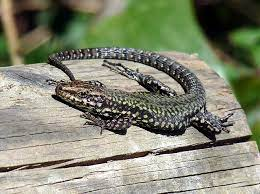
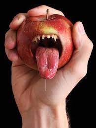
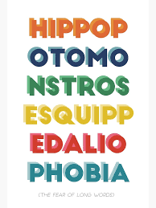
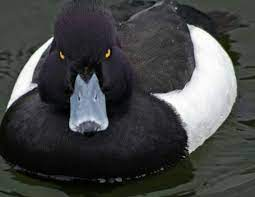

| La Cubiculacetophobie |
- La peur de voir un lézard tomber sur son lit.
- Provient du latin cubiculum qui signifie chambre à coucher et lacertus pour lézard[1][2].
|
 |
| La Carpophobie |
- La peur irrationnelle des fruits
- Provient du grec karpos qui signifie fruit[3].
|
 |
| L'Hippopotomonstrosesquipedaliophobie |
- Autrement dit, la peur des mots longs
- En réalité, le vrai nom est l'alcalophobie, beaucoup plus simple à dire[4]
|
 |
| La Butyrophobie |
- La peur du beurre
- Provient du latin butyrum signifiant beurre[5][6].
|
|
| L’Anatidaephobie |
- La peur qu'un canard vous regarde
- Provient du latin anatis signifiant canard[7].
|
 |